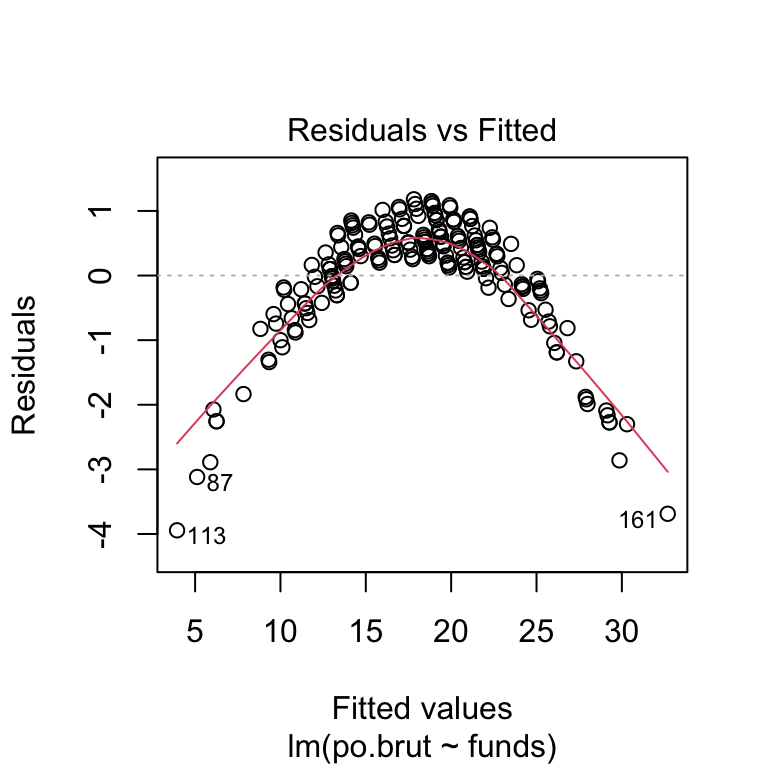

Exam 1
Sara Whitelaw
10/04/2021
Instructions
Create a folder in your computer (a good place would be under Crim 250, Exams).
Download the dataset from the Canvas website (fatal-police-shootings-data.csv) onto that folder, and save your Exam 1.Rmd file in the same folder.
Download the README.md file. This is the codebook.
Load the data into an R data frame.
dat.shootings <- read.csv("fatal-police-shootings-data.csv")Problem 1 (10 points)
- Describe the dataset. This is the source: https://github.com/washingtonpost/data-police-shootings . Write two sentences (max.) about this.
The data is documents those shootings in which a police officer in the line of duty, shoots and kills a civilian. The variables include a unique itentifier for each victim, the name of each victim, the date of the shooting,manner of death, armed, age, gender, race, city, state, signs of mental illness, threat level, flee, body camera, latitude and longitude, and accuracy of the coordinates.
- How many observations are there in the data frame?
names(dat.shootings)## [1] "id" "name"
## [3] "date" "manner_of_death"
## [5] "armed" "age"
## [7] "gender" "race"
## [9] "city" "state"
## [11] "signs_of_mental_illness" "threat_level"
## [13] "flee" "body_camera"
## [15] "longitude" "latitude"
## [17] "is_geocoding_exact"there are 17 observations in the data frame
- Look at the names of the variables in the data frame. Describe what “body_camera”, “flee”, and “armed” represent, according to the codebook. Again, only write one sentence (max) per variable.
body camera indicates whether the officer was wearing a body camera during the incident. flee indicates whether the victim was moving away from the officers by foot, car, or not fleeing. Armed represents whether the victim was armed described by undetermined, unknown, or unarmed.
- What are three weapons that you are surprised to find in the “armed” variable? Make a table of the values in “armed” to see the options.
table(dat.shootings$armed)##
## air conditioner
## 207 1
## air pistol Airsoft pistol
## 1 3
## ax barstool
## 24 1
## baseball bat baseball bat and bottle
## 20 1
## baseball bat and fireplace poker baseball bat and knife
## 1 1
## baton BB gun
## 6 15
## BB gun and vehicle bean-bag gun
## 1 1
## beer bottle binoculars
## 3 1
## blunt object bottle
## 5 1
## bow and arrow box cutter
## 1 13
## brick car, knife and mace
## 2 1
## carjack chain
## 1 3
## chain saw chainsaw
## 2 1
## chair claimed to be armed
## 4 1
## contractor's level cordless drill
## 1 1
## crossbow crowbar
## 9 5
## fireworks flagpole
## 1 1
## flashlight garden tool
## 2 2
## glass shard grenade
## 4 1
## gun gun and car
## 3798 12
## gun and knife gun and machete
## 22 3
## gun and sword gun and vehicle
## 1 17
## guns and explosives hammer
## 3 18
## hand torch hatchet
## 1 14
## hatchet and gun ice pick
## 2 1
## incendiary device knife
## 2 955
## knife and vehicle lawn mower blade
## 1 2
## machete machete and gun
## 51 1
## meat cleaver metal hand tool
## 6 2
## metal object metal pipe
## 5 16
## metal pole metal rake
## 4 1
## metal stick microphone
## 3 1
## motorcycle nail gun
## 1 1
## oar pellet gun
## 1 3
## pen pepper spray
## 1 2
## pick-axe piece of wood
## 4 7
## pipe pitchfork
## 7 2
## pole pole and knife
## 3 2
## railroad spikes rock
## 1 7
## samurai sword scissors
## 4 9
## screwdriver sharp object
## 16 14
## shovel spear
## 7 2
## stapler straight edge razor
## 1 5
## sword Taser
## 23 34
## tire iron toy weapon
## 4 226
## unarmed undetermined
## 421 188
## unknown weapon vehicle
## 82 213
## vehicle and gun vehicle and machete
## 8 1
## walking stick wasp spray
## 1 1
## wrench
## 1I am most shocked to see that there were binoculars, wasp spray, and a walking stick classified as a weapon.
Problem 2 (10 points)
- Describe the age distribution of the sample. Is this what you would expect to see?
summary(dat.shootings$age)## Min. 1st Qu. Median Mean 3rd Qu. Max. NA's
## 6.00 27.00 35.00 37.12 45.00 91.00 308hist(dat.shootings$age)the minimum age of 6 and maximum age of 91 are the most shocking variables as one cannot understand how someone at that age can be seen as a threat to a police officer. The mean of the sample is 37.12, median is 35. The first quartile is at 27 yrs and the 3rd is at 45. The histogram shows a right skew of the data, with most of the data centered around the middle ages which is expected
- To understand the center of the age distribution, would you use a mean or a median, and why? Find the one you picked.
the center of the age distribution is understood by the median. Since the data is not evenly distributed, rather has a right skew, the median will be a better representative of the middle of the data. Median is not affected by the numerical values of the outliers. The median of the data is 35 years old.
- Describe the gender distribution of the sample. Do you find this surprising?
dat.shootings$gender## [1] "M" "M" "M" "M" "M" "M" "M" "M" "F" "M" "M" "M" "M" "M" "M" "M" "M" "M"
## [19] "M" "M" "M" "M" "M" "M" "M" "M" "M" "M" "M" "M" "M" "M" "M" "M" "M" "M"
## [37] "M" "M" "M" "M" "M" "M" "M" "M" "M" "M" "M" "M" "M" "M" "M" "F" "M" "M"
## [55] "M" "M" "M" "M" "M" "M" "F" "M" "M" "M" "F" "M" "M" "M" "M" "M" "M" "M"
## [73] "M" "M" "M" "M" "M" "M" "M" "M" "F" "M" "M" "M" "M" "M" "M" "M" "M" "M"
## [91] "M" "M" "M" "M" "M" "M" "M" "M" "M" "M" "M" "M" "M" "M" "M" "M" "M" "M"
## [109] "M" "M" "M" "M" "M" "M" "M" "M" "M" "M" "F" "M" "M" "M" "M" "F" "M" "M"
## [127] "M" "M" "M" "M" "M" "M" "M" "M" "M" "M" "M" "M" "M" "M" "M" "M" "M" "F"
## [145] "M" "M" "M" "M" "F" "M" "M" "F" "M" "M" "M" "M" "M" "M" "M" "M" "M" "M"
## [163] "M" "M" "M" "M" "M" "M" "F" "M" "M" "M" "M" "M" "M" "M" "M" "M" "M" "M"
## [181] "M" "M" "M" "M" "M" "M" "M" "M" "M" "M" "M" "M" "M" "M" "M" "M" "M" "M"
## [199] "M" "F" "M" "M" "F" "M" "M" "M" "M" "M" "M" "M" "M" "M" "M" "M" "M" "M"
## [217] "M" "M" "M" "M" "M" "M" "M" "M" "M" "M" "M" "M" "M" "F" "M" "F" "M" "M"
## [235] "M" "M" "M" "M" "M" "M" "M" "M" "M" "M" "F" "M" "M" "M" "M" "M" "M" "M"
## [253] "M" "M" "M" "M" "M" "M" "M" "M" "M" "M" "M" "M" "M" "M" "M" "M" "M" "M"
## [271] "M" "M" "M" "M" "M" "M" "M" "M" "M" "M" "M" "M" "M" "M" "M" "M" "M" "M"
## [289] "M" "M" "M" "M" "M" "M" "M" "M" "M" "M" "M" "M" "M" "M" "M" "M" "M" "M"
## [307] "M" "F" "M" "M" "M" "M" "M" "M" "M" "M" "M" "M" "M" "M" "M" "M" "M" "M"
## [325] "F" "M" "M" "M" "M" "M" "M" "M" "M" "M" "M" "M" "M" "M" "M" "M" "M" "M"
## [343] "M" "M" "M" "M" "M" "M" "M" "M" "M" "M" "M" "M" "M" "M" "M" "M" "M" "M"
## [361] "M" "M" "M" "M" "M" "M" "M" "M" "M" "F" "M" "M" "M" "M" "M" "M" "M" "M"
## [379] "M" "F" "M" "M" "M" "M" "M" "M" "M" "M" "M" "M" "M" "M" "M" "M" "M" "M"
## [397] "M" "M" "M" "M" "M" "M" "M" "M" "M" "M" "M" "M" "M" "F" "M" "M" "M" "M"
## [415] "M" "M" "M" "M" "M" "M" "M" "M" "M" "M" "M" "M" "M" "M" "M" "M" "F" "M"
## [433] "M" "M" "M" "M" "M" "M" "M" "F" "M" "M" "M" "M" "M" "M" "M" "M" "M" "M"
## [451] "M" "M" "M" "M" "M" "M" "M" "M" "M" "M" "M" "M" "M" "M" "M" "M" "M" "M"
## [469] "M" "M" "M" "M" "M" "M" "M" "M" "M" "M" "M" "M" "M" "M" "M" "M" "M" "M"
## [487] "M" "M" "M" "M" "M" "M" "M" "M" "M" "M" "M" "M" "M" "M" "M" "M" "M" "M"
## [505] "M" "M" "M" "M" "M" "M" "M" "M" "M" "M" "M" "M" "M" "M" "M" "M" "M" "M"
## [523] "M" "M" "M" "M" "M" "M" "M" "M" "M" "M" "M" "M" "M" "M" "M" "M" "M" "M"
## [541] "M" "M" "M" "M" "M" "M" "M" "F" "M" "M" "M" "M" "M" "M" "M" "M" "M" "M"
## [559] "M" "M" "M" "M" "M" "M" "M" "M" "M" "M" "M" "M" "M" "M" "M" "M" "M" "M"
## [577] "M" "M" "M" "M" "M" "M" "M" "M" "M" "M" "M" "M" "M" "M" "M" "M" "M" "M"
## [595] "M" "M" "M" "M" "M" "M" "M" "M" "M" "M" "M" "M" "M" "M" "F" "M" "M" "M"
## [613] "M" "M" "M" "M" "M" "M" "M" "M" "M" "M" "M" "M" "M" "M" "M" "M" "M" "M"
## [631] "M" "M" "M" "M" "M" "M" "M" "M" "M" "M" "M" "M" "M" "M" "M" "M" "M" "M"
## [649] "M" "M" "M" "M" "M" "M" "M" "M" "M" "M" "M" "M" "M" "M" "M" "M" "M" "M"
## [667] "M" "M" "M" "M" "M" "M" "M" "M" "M" "M" "F" "M" "M" "M" "M" "M" "M" "M"
## [685] "M" "M" "M" "M" "M" "M" "M" "M" "M" "M" "M" "M" "M" "M" "M" "M" "M" "M"
## [703] "M" "M" "M" "M" "M" "M" "M" "M" "M" "M" "M" "M" "M" "M" "F" "M" "M" "M"
## [721] "M" "M" "M" "M" "M" "M" "M" "M" "M" "M" "M" "M" "M" "M" "M" "M" "M" "F"
## [739] "M" "M" "M" "M" "M" "M" "M" "M" "F" "M" "M" "M" "M" "M" "M" "M" "M" "M"
## [757] "M" "M" "M" "F" "M" "M" "M" "M" "M" "M" "M" "M" "M" "M" "M" "M" "F" "M"
## [775] "M" "M" "M" "M" "F" "M" "M" "M" "M" "M" "M" "M" "M" "M" "M" "M" "M" "M"
## [793] "M" "M" "M" "M" "M" "M" "M" "M" "M" "M" "M" "M" "M" "M" "M" "M" "M" "M"
## [811] "M" "M" "F" "M" "M" "M" "M" "M" "M" "M" "M" "M" "M" "M" "M" "M" "M" "M"
## [829] "M" "M" "M" "M" "M" "M" "M" "M" "M" "M" "M" "M" "M" "F" "M" "M" "M" "M"
## [847] "M" "M" "M" "M" "M" "M" "M" "M" "M" "M" "M" "M" "M" "M" "M" "M" "M" "M"
## [865] "M" "M" "M" "M" "M" "M" "M" "M" "M" "M" "M" "M" "M" "M" "M" "M" "M" "M"
## [883] "M" "M" "M" "M" "M" "M" "M" "M" "M" "M" "M" "M" "F" "M" "M" "M" "M" "M"
## [901] "M" "M" "M" "M" "M" "M" "M" "M" "M" "F" "M" "M" "M" "M" "M" "M" "M" "M"
## [919] "M" "F" "M" "M" "M" "M" "M" "M" "M" "M" "M" "M" "M" "M" "M" "M" "M" "M"
## [937] "M" "M" "M" "M" "M" "F" "M" "M" "M" "M" "M" "F" "M" "M" "M" "M" "M" "M"
## [955] "M" "M" "M" "F" "M" "M" "M" "M" "M" "M" "M" "M" "M" "M" "M" "M" "M" "M"
## [973] "M" "M" "M" "M" "M" "M" "M" "M" "M" "M" "F" "M" "M" "M" "M" "M" "M" "F"
## [991] "M" "M" "M" "M" "M" "M" "M" "M" "M" "M" "M" "M" "M" "M" "M" "M" "M" "M"
## [1009] "M" "M" "M" "M" "M" "F" "M" "M" "M" "F" "M" "M" "M" "M" "M" "M" "M" "M"
## [1027] "M" "M" "M" "F" "M" "M" "M" "M" "M" "M" "M" "M" "M" "M" "M" "M" "M" "M"
## [1045] "M" "M" "M" "M" "M" "M" "M" "M" "M" "M" "M" "M" "M" "F" "M" "M" "F" "M"
## [1063] "M" "M" "M" "F" "M" "M" "M" "M" "M" "M" "M" "M" "M" "M" "M" "M" "M" "M"
## [1081] "M" "M" "M" "M" "M" "M" "M" "M" "M" "M" "M" "M" "M" "M" "M" "M" "M" "M"
## [1099] "M" "M" "M" "M" "M" "M" "M" "M" "M" "M" "M" "M" "F" "M" "M" "M" "M" "M"
## [1117] "M" "M" "M" "M" "M" "M" "M" "M" "M" "M" "M" "M" "M" "M" "M" "M" "M" "M"
## [1135] "M" "F" "F" "M" "F" "M" "M" "M" "M" "M" "M" "M" "M" "M" "M" "M" "M" "M"
## [1153] "M" "M" "M" "M" "M" "M" "M" "M" "M" "M" "M" "M" "M" "M" "M" "M" "M" "M"
## [1171] "M" "M" "M" "M" "M" "M" "M" "M" "M" "M" "M" "M" "M" "M" "M" "M" "M" "M"
## [1189] "M" "M" "M" "M" "M" "M" "M" "M" "M" "F" "M" "M" "M" "M" "M" "M" "M" "M"
## [1207] "M" "M" "M" "M" "M" "M" "F" "M" "M" "M" "M" "M" "M" "M" "M" "M" "M" "M"
## [1225] "M" "M" "M" "M" "M" "M" "M" "M" "M" "M" "M" "M" "M" "M" "M" "F" "M" "M"
## [1243] "M" "M" "F" "M" "M" "M" "M" "M" "M" "M" "M" "M" "M" "M" "F" "M" "M" "M"
## [1261] "M" "M" "M" "M" "F" "M" "M" "M" "M" "F" "M" "M" "M" "M" "M" "M" "M" "M"
## [1279] "M" "M" "M" "M" "M" "M" "M" "M" "M" "M" "M" "F" "M" "M" "M" "M" "M" "M"
## [1297] "M" "M" "M" "M" "M" "M" "M" "M" "M" "M" "M" "M" "M" "F" "M" "M" "F" "M"
## [1315] "M" "M" "M" "M" "M" "M" "M" "M" "M" "M" "M" "M" "M" "M" "M" "M" "M" "M"
## [1333] "M" "M" "M" "M" "F" "M" "M" "M" "M" "M" "M" "M" "M" "M" "M" "M" "M" "M"
## [1351] "M" "M" "M" "M" "M" "M" "M" "M" "M" "M" "M" "M" "M" "M" "M" "F" "M" "M"
## [1369] "M" "M" "M" "M" "M" "M" "M" "M" "M" "M" "M" "M" "M" "M" "M" "M" "M" "M"
## [1387] "M" "M" "F" "M" "M" "M" "M" "M" "M" "M" "M" "M" "M" "M" "M" "M" "M" "M"
## [1405] "M" "M" "M" "M" "M" "M" "M" "M" "M" "M" "M" "M" "M" "M" "M" "M" "M" "M"
## [1423] "M" "M" "M" "M" "M" "M" "M" "M" "M" "M" "M" "M" "M" "M" "M" "M" "M" "M"
## [1441] "M" "M" "M" "M" "M" "M" "M" "M" "M" "M" "M" "M" "M" "M" "M" "M" "M" "M"
## [1459] "M" "M" "M" "M" "M" "M" "M" "M" "M" "F" "M" "M" "M" "M" "M" "M" "M" "M"
## [1477] "M" "M" "M" "M" "M" "M" "M" "M" "M" "M" "M" "M" "M" "M" "M" "M" "M" "M"
## [1495] "M" "M" "M" "M" "M" "M" "M" "M" "M" "M" "M" "F" "M" "M" "M" "M" "M" "M"
## [1513] "M" "M" "M" "M" "M" "M" "M" "M" "M" "M" "M" "M" "M" "M" "M" "M" "M" "M"
## [1531] "M" "M" "M" "M" "M" "M" "M" "M" "M" "M" "M" "M" "M" "M" "M" "M" "M" "M"
## [1549] "M" "M" "M" "M" "M" "M" "M" "M" "M" "M" "F" "M" "M" "M" "M" "F" "M" "M"
## [1567] "M" "M" "M" "M" "M" "M" "M" "M" "M" "M" "M" "M" "M" "M" "M" "M" "M" "M"
## [1585] "M" "M" "M" "M" "M" "M" "M" "M" "M" "M" "M" "M" "M" "M" "M" "M" "M" "M"
## [1603] "M" "M" "M" "M" "M" "M" "M" "M" "M" "M" "M" "M" "M" "M" "M" "M" "M" "M"
## [1621] "M" "M" "M" "M" "M" "M" "M" "M" "M" "M" "M" "M" "M" "M" "M" "M" "F" "M"
## [1639] "M" "M" "M" "M" "M" "M" "M" "M" "M" "M" "M" "M" "M" "M" "M" "M" "M" "M"
## [1657] "M" "M" "M" "M" "M" "M" "M" "M" "M" "M" "M" "M" "M" "M" "M" "M" "M" "M"
## [1675] "M" "M" "M" "M" "M" "M" "M" "M" "M" "M" "M" "M" "M" "M" "M" "M" "M" "M"
## [1693] "M" "M" "F" "M" "M" "M" "M" "M" "M" "M" "M" "M" "M" "M" "M" "M" "M" "M"
## [1711] "M" "M" "M" "M" "M" "M" "M" "M" "M" "M" "M" "M" "M" "M" "M" "M" "M" "M"
## [1729] "M" "M" "M" "M" "M" "M" "M" "M" "M" "M" "M" "M" "F" "M" "M" "M" "M" "M"
## [1747] "M" "M" "M" "M" "M" "M" "M" "M" "M" "M" "M" "M" "M" "M" "F" "M" "M" "M"
## [1765] "M" "M" "F" "M" "M" "M" "M" "M" "M" "F" "M" "M" "M" "M" "M" "M" "M" "M"
## [1783] "F" "M" "M" "M" "M" "M" "M" "M" "M" "M" "M" "M" "M" "M" "F" "M" "F" "M"
## [1801] "M" "M" "M" "M" "F" "M" "M" "M" "M" "M" "M" "M" "M" "M" "M" "M" "M" "M"
## [1819] "M" "M" "M" "M" "M" "M" "M" "M" "M" "M" "M" "M" "M" "M" "M" "M" "M" "M"
## [1837] "M" "M" "M" "M" "M" "M" "M" "M" "M" "M" "M" "M" "M" "M" "M" "M" "M" "M"
## [1855] "M" "M" "M" "M" "M" "M" "M" "M" "M" "M" "M" "M" "M" "M" "M" "M" "M" "M"
## [1873] "M" "M" "M" "M" "M" "M" "M" "M" "M" "M" "M" "M" "M" "M" "M" "M" "M" "M"
## [1891] "M" "M" "M" "M" "M" "M" "M" "M" "M" "M" "M" "F" "M" "M" "M" "M" "M" "M"
## [1909] "M" "M" "M" "M" "M" "M" "M" "M" "M" "M" "M" "M" "M" "M" "M" "M" "M" "M"
## [1927] "M" "M" "M" "M" "M" "M" "F" "M" "M" "M" "M" "M" "M" "M" "F" "M" "M" "M"
## [1945] "M" "M" "M" "M" "M" "M" "M" "M" "M" "M" "M" "M" "M" "M" "M" "M" "M" "M"
## [1963] "M" "M" "M" "M" "M" "M" "M" "M" "M" "M" "M" "M" "M" "M" "M" "M" "M" "M"
## [1981] "M" "M" "M" "M" "M" "M" "M" "M" "F" "M" "M" "M" "M" "M" "M" "M" "F" "M"
## [1999] "M" "M" "M" "M" "M" "M" "M" "M" "M" "M" "M" "M" "M" "M" "M" "M" "M" "M"
## [2017] "M" "M" "M" "M" "M" "M" "M" "M" "M" "M" "M" "M" "M" "M" "M" "M" "M" "M"
## [2035] "M" "M" "M" "M" "M" "M" "M" "M" "M" "M" "M" "M" "M" "M" "M" "M" "M" "M"
## [2053] "M" "M" "M" "M" "M" "M" "M" "M" "M" "M" "M" "M" "M" "M" "M" "M" "M" "M"
## [2071] "M" "M" "M" "M" "M" "M" "M" "M" "F" "M" "M" "M" "F" "M" "M" "M" "M" "M"
## [2089] "M" "M" "M" "M" "M" "M" "M" "M" "M" "M" "M" "M" "M" "M" "M" "M" "M" "M"
## [2107] "M" "M" "M" "M" "M" "M" "M" "M" "M" "M" "M" "M" "M" "M" "M" "M" "F" "M"
## [2125] "M" "M" "M" "M" "M" "M" "F" "M" "M" "M" "F" "M" "M" "M" "M" "M" "M" "M"
## [2143] "M" "M" "M" "M" "M" "M" "M" "M" "M" "M" "M" "M" "M" "M" "M" "M" "M" "M"
## [2161] "M" "M" "M" "M" "M" "M" "M" "M" "M" "M" "M" "M" "M" "F" "M" "M" "M" "M"
## [2179] "M" "M" "M" "M" "F" "M" "M" "M" "M" "M" "F" "M" "M" "M" "M" "M" "M" "M"
## [2197] "M" "M" "M" "M" "M" "M" "M" "M" "M" "M" "M" "M" "M" "M" "M" "M" "M" "M"
## [2215] "M" "M" "M" "M" "M" "M" "M" "M" "M" "M" "M" "M" "M" "M" "M" "M" "M" "M"
## [2233] "M" "M" "M" "M" "M" "M" "M" "M" "M" "M" "M" "M" "M" "M" "M" "M" "M" "M"
## [2251] "M" "M" "M" "M" "M" "M" "F" "M" "M" "M" "M" "M" "M" "M" "M" "M" "M" "M"
## [2269] "M" "M" "M" "M" "M" "M" "M" "M" "M" "M" "M" "M" "M" "M" "M" "M" "M" "M"
## [2287] "M" "M" "M" "M" "M" "M" "M" "F" "M" "M" "M" "M" "M" "M" "M" "M" "M" "M"
## [2305] "M" "M" "M" "M" "F" "M" "M" "M" "M" "M" "M" "M" "M" "M" "M" "F" "M" "M"
## [2323] "M" "M" "M" "F" "M" "M" "M" "M" "M" "M" "M" "M" "M" "M" "M" "M" "M" "M"
## [2341] "M" "M" "M" "M" "M" "M" "M" "M" "M" "M" "M" "M" "M" "M" "M" "M" "M" "M"
## [2359] "M" "M" "M" "M" "M" "M" "M" "M" "M" "M" "M" "M" "M" "M" "M" "M" "M" "M"
## [2377] "M" "M" "M" "F" "M" "M" "M" "M" "M" "M" "M" "M" "M" "M" "M" "M" "M" "M"
## [2395] "M" "M" "M" "M" "M" "M" "M" "M" "M" "M" "M" "M" "F" "M" "F" "M" "F" "M"
## [2413] "M" "M" "M" "M" "M" "M" "M" "M" "M" "M" "M" "M" "M" "M" "M" "M" "M" "M"
## [2431] "M" "M" "M" "M" "M" "M" "M" "M" "M" "M" "F" "M" "M" "M" "M" "M" "M" "M"
## [2449] "M" "M" "M" "M" "M" "M" "M" "M" "M" "M" "M" "M" "F" "M" "M" "M" "M" "M"
## [2467] "M" "M" "M" "M" "M" "M" "F" "M" "M" "M" "M" "M" "M" "M" "M" "M" "M" "M"
## [2485] "M" "M" "M" "M" "M" "M" "M" "F" "M" "M" "F" "M" "M" "M" "M" "M" "M" "M"
## [2503] "M" "M" "M" "M" "M" "M" "M" "M" "M" "M" "M" "M" "M" "M" "M" "M" "M" "M"
## [2521] "F" "M" "M" "M" "M" "M" "M" "M" "M" "M" "M" "M" "M" "M" "M" "M" "M" "M"
## [2539] "M" "M" "M" "M" "M" "M" "M" "M" "M" "M" "M" "M" "M" "M" "F" "M" "M" "M"
## [2557] "M" "M" "M" "M" "M" "M" "M" "M" "M" "M" "M" "M" "M" "M" "M" "M" "M" "M"
## [2575] "M" "M" "M" "M" "M" "M" "M" "M" "M" "M" "M" "M" "M" "M" "M" "M" "M" "M"
## [2593] "M" "F" "M" "M" "M" "M" "F" "M" "M" "M" "M" "F" "M" "M" "M" "M" "M" "M"
## [2611] "M" "M" "M" "M" "F" "M" "M" "M" "F" "M" "M" "M" "M" "M" "M" "M" "M" "M"
## [2629] "M" "F" "M" "M" "M" "M" "M" "M" "M" "M" "M" "M" "M" "M" "M" "M" "M" "M"
## [2647] "M" "M" "M" "M" "M" "M" "" "M" "M" "M" "M" "M" "M" "M" "M" "M" "M" "M"
## [2665] "M" "M" "M" "M" "M" "M" "M" "M" "M" "M" "M" "M" "M" "M" "M" "M" "M" "M"
## [2683] "M" "M" "M" "M" "M" "M" "M" "M" "M" "M" "M" "M" "M" "M" "M" "M" "M" "F"
## [2701] "M" "M" "M" "M" "M" "M" "M" "M" "M" "M" "M" "M" "M" "M" "F" "M" "M" "F"
## [2719] "M" "M" "M" "M" "M" "M" "M" "M" "M" "M" "M" "M" "M" "M" "M" "M" "M" "M"
## [2737] "M" "M" "M" "M" "M" "M" "M" "M" "M" "M" "M" "F" "M" "M" "F" "M" "M" "M"
## [2755] "M" "M" "M" "M" "M" "M" "M" "M" "M" "M" "M" "M" "M" "M" "M" "M" "M" "M"
## [2773] "M" "F" "M" "M" "M" "M" "M" "M" "M" "M" "M" "M" "M" "M" "M" "M" "M" "M"
## [2791] "F" "M" "F" "M" "F" "M" "M" "M" "M" "M" "M" "M" "M" "M" "F" "M" "M" "M"
## [2809] "M" "M" "M" "M" "M" "M" "M" "M" "M" "M" "M" "M" "M" "M" "M" "M" "M" "M"
## [2827] "M" "M" "M" "M" "M" "M" "M" "M" "M" "M" "M" "M" "M" "M" "M" "M" "M" "M"
## [2845] "M" "M" "M" "M" "M" "M" "M" "M" "M" "M" "M" "M" "M" "M" "M" "M" "M" "M"
## [2863] "M" "M" "M" "M" "M" "M" "M" "M" "M" "M" "M" "M" "M" "M" "M" "M" "M" "M"
## [2881] "M" "M" "F" "M" "M" "M" "M" "M" "M" "M" "M" "M" "M" "M" "M" "M" "M" "M"
## [2899] "M" "M" "M" "M" "M" "F" "M" "M" "M" "M" "M" "M" "M" "M" "M" "M" "M" "M"
## [2917] "M" "M" "M" "M" "M" "F" "M" "M" "M" "M" "M" "M" "M" "M" "M" "M" "M" "M"
## [2935] "M" "M" "M" "M" "M" "F" "M" "M" "M" "M" "M" "M" "M" "M" "M" "M" "M" "M"
## [2953] "M" "M" "M" "M" "M" "M" "M" "M" "M" "M" "M" "M" "M" "M" "M" "M" "M" "M"
## [2971] "M" "M" "M" "M" "M" "M" "M" "M" "M" "M" "M" "M" "M" "M" "F" "M" "F" "M"
## [2989] "M" "M" "M" "M" "M" "M" "M" "M" "M" "M" "M" "M" "M" "M" "M" "M" "M" "M"
## [3007] "M" "M" "M" "M" "M" "M" "M" "M" "M" "M" "M" "M" "M" "M" "M" "M" "M" "F"
## [3025] "F" "M" "M" "M" "M" "M" "M" "M" "M" "M" "M" "M" "M" "M" "M" "M" "M" "M"
## [3043] "M" "M" "M" "M" "M" "M" "M" "M" "M" "M" "M" "M" "M" "M" "M" "M" "M" "M"
## [3061] "M" "M" "M" "M" "M" "M" "M" "M" "M" "M" "M" "M" "F" "M" "M" "M" "M" "M"
## [3079] "M" "M" "M" "M" "M" "M" "M" "M" "M" "M" "M" "M" "M" "M" "M" "M" "M" "M"
## [3097] "M" "M" "M" "M" "M" "M" "M" "M" "M" "M" "M" "M" "M" "M" "M" "M" "M" "M"
## [3115] "M" "M" "M" "M" "M" "M" "M" "M" "M" "F" "M" "M" "M" "M" "M" "M" "M" "M"
## [3133] "M" "M" "M" "M" "M" "M" "M" "M" "M" "F" "M" "M" "M" "M" "M" "F" "M" "M"
## [3151] "M" "M" "M" "M" "M" "F" "M" "M" "M" "M" "M" "M" "M" "M" "M" "M" "M" "M"
## [3169] "M" "M" "M" "M" "M" "M" "M" "M" "M" "M" "M" "M" "M" "M" "M" "M" "M" "M"
## [3187] "M" "M" "M" "M" "M" "M" "M" "M" "M" "M" "M" "M" "M" "M" "M" "M" "F" "M"
## [3205] "M" "M" "M" "M" "F" "M" "M" "M" "M" "M" "M" "M" "M" "M" "M" "M" "M" "M"
## [3223] "M" "M" "M" "M" "M" "M" "M" "M" "M" "M" "M" "M" "M" "M" "M" "M" "F" "M"
## [3241] "M" "M" "M" "M" "M" "M" "M" "M" "M" "M" "M" "M" "M" "M" "M" "M" "M" "M"
## [3259] "M" "M" "M" "M" "M" "M" "M" "M" "F" "M" "M" "M" "M" "M" "M" "M" "M" "M"
## [3277] "M" "M" "M" "M" "M" "M" "M" "M" "M" "M" "M" "M" "M" "M" "M" "M" "M" "M"
## [3295] "M" "M" "M" "M" "M" "M" "M" "M" "M" "M" "M" "M" "M" "M" "M" "M" "F" "M"
## [3313] "F" "M" "M" "M" "M" "M" "M" "M" "M" "M" "M" "M" "M" "M" "M" "M" "M" "M"
## [3331] "M" "M" "M" "M" "M" "M" "M" "F" "M" "M" "M" "M" "M" "M" "F" "M" "F" "M"
## [3349] "M" "M" "M" "M" "M" "M" "M" "M" "M" "M" "M" "M" "M" "M" "M" "M" "M" "M"
## [3367] "M" "M" "M" "M" "M" "M" "M" "M" "M" "M" "M" "M" "M" "M" "M" "M" "M" "M"
## [3385] "M" "F" "M" "F" "M" "M" "M" "M" "M" "M" "M" "M" "M" "M" "M" "M" "M" "M"
## [3403] "M" "F" "M" "M" "M" "M" "M" "M" "M" "M" "M" "M" "M" "M" "M" "M" "M" "M"
## [3421] "F" "M" "M" "M" "M" "F" "M" "M" "M" "M" "M" "M" "M" "M" "M" "M" "M" "M"
## [3439] "F" "M" "M" "M" "F" "M" "M" "M" "M" "M" "M" "M" "M" "M" "M" "M" "M" "M"
## [3457] "M" "M" "M" "M" "M" "M" "M" "M" "M" "M" "M" "M" "M" "M" "M" "M" "M" "M"
## [3475] "M" "M" "M" "M" "M" "M" "M" "M" "M" "M" "M" "M" "M" "M" "M" "M" "M" "M"
## [3493] "M" "M" "M" "M" "M" "M" "M" "F" "M" "M" "M" "M" "M" "M" "M" "M" "M" "M"
## [3511] "M" "M" "M" "M" "F" "M" "M" "M" "M" "M" "M" "M" "M" "M" "M" "M" "M" "M"
## [3529] "M" "M" "M" "M" "M" "M" "M" "M" "M" "M" "M" "M" "M" "F" "M" "M" "M" "M"
## [3547] "M" "M" "M" "M" "F" "M" "M" "M" "M" "M" "M" "M" "M" "M" "M" "M" "M" "M"
## [3565] "M" "F" "M" "M" "M" "M" "M" "M" "M" "M" "M" "M" "M" "M" "M" "M" "M" "M"
## [3583] "M" "M" "M" "M" "M" "M" "M" "M" "M" "M" "M" "M" "M" "M" "M" "M" "M" "M"
## [3601] "M" "M" "M" "M" "M" "M" "M" "M" "M" "M" "M" "M" "M" "M" "M" "M" "M" "M"
## [3619] "M" "M" "M" "M" "M" "M" "M" "M" "M" "M" "F" "F" "M" "M" "M" "M" "M" "F"
## [3637] "F" "M" "M" "M" "M" "M" "M" "M" "F" "F" "M" "M" "M" "M" "M" "M" "M" "M"
## [3655] "M" "M" "M" "M" "M" "M" "M" "M" "F" "M" "M" "M" "M" "M" "M" "M" "M" "M"
## [3673] "M" "M" "M" "M" "M" "M" "F" "M" "M" "M" "M" "M" "M" "M" "M" "M" "M" "M"
## [3691] "M" "M" "M" "M" "M" "M" "M" "M" "M" "M" "M" "M" "M" "M" "M" "M" "M" "F"
## [3709] "M" "M" "M" "M" "M" "M" "M" "M" "M" "M" "M" "M" "M" "M" "M" "M" "M" "M"
## [3727] "F" "M" "M" "M" "M" "M" "M" "F" "M" "M" "M" "M" "M" "M" "M" "M" "M" "M"
## [3745] "M" "M" "M" "M" "M" "M" "M" "M" "M" "M" "M" "M" "F" "M" "M" "M" "M" "M"
## [3763] "M" "M" "M" "M" "M" "M" "M" "M" "M" "M" "M" "M" "F" "M" "M" "M" "M" "M"
## [3781] "M" "M" "M" "M" "M" "M" "M" "M" "M" "M" "M" "M" "M" "M" "M" "M" "M" "M"
## [3799] "M" "M" "M" "M" "M" "M" "M" "M" "M" "M" "M" "M" "M" "M" "M" "M" "M" "M"
## [3817] "M" "M" "M" "M" "M" "M" "F" "M" "M" "M" "M" "M" "M" "M" "M" "M" "M" "M"
## [3835] "M" "M" "M" "M" "M" "M" "M" "F" "M" "M" "M" "M" "M" "M" "M" "M" "M" "M"
## [3853] "M" "M" "M" "M" "M" "M" "M" "M" "M" "M" "M" "M" "M" "M" "M" "M" "M" "M"
## [3871] "M" "M" "M" "M" "M" "F" "F" "M" "M" "M" "F" "M" "M" "M" "M" "M" "M" "M"
## [3889] "M" "M" "M" "M" "M" "F" "M" "M" "F" "M" "M" "M" "M" "M" "M" "M" "M" "M"
## [3907] "M" "M" "M" "F" "M" "M" "M" "M" "M" "M" "M" "M" "M" "M" "M" "M" "M" "M"
## [3925] "M" "M" "M" "M" "M" "M" "M" "M" "M" "M" "M" "M" "M" "M" "M" "M" "M" "M"
## [3943] "M" "M" "M" "M" "M" "M" "M" "M" "M" "M" "M" "M" "M" "M" "M" "M" "M" "M"
## [3961] "M" "M" "M" "M" "M" "M" "M" "M" "M" "M" "M" "M" "M" "M" "M" "M" "M" "M"
## [3979] "M" "M" "M" "M" "M" "F" "M" "M" "M" "M" "M" "M" "M" "M" "M" "M" "M" "M"
## [3997] "M" "M" "M" "F" "M" "M" "M" "M" "M" "M" "F" "M" "M" "M" "M" "M" "M" "M"
## [4015] "M" "M" "M" "M" "M" "M" "M" "M" "M" "M" "M" "M" "M" "M" "M" "M" "M" "M"
## [4033] "M" "M" "M" "M" "M" "M" "M" "M" "M" "M" "M" "M" "M" "M" "M" "M" "M" "M"
## [4051] "M" "M" "M" "M" "M" "M" "M" "M" "M" "M" "M" "M" "M" "F" "M" "M" "M" "M"
## [4069] "M" "M" "M" "M" "M" "M" "M" "M" "M" "M" "M" "M" "M" "M" "M" "F" "M" "M"
## [4087] "M" "M" "M" "M" "M" "F" "M" "M" "M" "M" "M" "F" "M" "M" "M" "M" "M" "M"
## [4105] "M" "M" "M" "F" "M" "M" "M" "M" "M" "M" "M" "M" "F" "M" "M" "M" "M" "M"
## [4123] "M" "M" "M" "M" "M" "M" "F" "M" "M" "M" "F" "M" "M" "M" "M" "M" "M" "M"
## [4141] "M" "M" "M" "M" "M" "M" "M" "M" "M" "M" "M" "M" "F" "M" "M" "M" "M" "M"
## [4159] "M" "M" "M" "M" "M" "M" "M" "M" "M" "M" "M" "M" "M" "M" "M" "M" "M" "F"
## [4177] "M" "M" "M" "F" "M" "M" "M" "M" "M" "M" "M" "M" "M" "M" "M" "M" "M" "M"
## [4195] "M" "M" "M" "M" "M" "M" "M" "M" "M" "M" "M" "M" "M" "F" "M" "M" "M" "M"
## [4213] "M" "M" "M" "M" "M" "M" "M" "M" "M" "M" "M" "M" "M" "M" "M" "M" "M" "M"
## [4231] "M" "M" "M" "M" "M" "M" "M" "M" "M" "M" "M" "M" "M" "M" "M" "F" "M" "M"
## [4249] "F" "M" "M" "M" "M" "M" "M" "M" "M" "M" "M" "M" "M" "M" "M" "M" "M" "M"
## [4267] "M" "M" "M" "M" "M" "M" "M" "M" "M" "M" "M" "M" "F" "M" "M" "M" "M" "M"
## [4285] "M" "F" "M" "M" "M" "M" "M" "M" "M" "F" "M" "M" "F" "M" "M" "M" "M" "M"
## [4303] "M" "M" "M" "M" "M" "M" "M" "M" "M" "M" "M" "M" "M" "M" "M" "M" "F" "F"
## [4321] "M" "M" "M" "M" "M" "M" "M" "M" "M" "M" "M" "M" "M" "M" "M" "M" "M" "M"
## [4339] "M" "M" "M" "M" "M" "M" "M" "M" "M" "M" "M" "F" "M" "M" "M" "M" "M" "M"
## [4357] "M" "M" "M" "M" "M" "M" "M" "M" "M" "M" "M" "M" "M" "M" "M" "M" "M" "M"
## [4375] "M" "M" "M" "M" "M" "M" "M" "M" "M" "M" "M" "M" "M" "M" "M" "M" "M" "M"
## [4393] "M" "M" "M" "M" "M" "M" "M" "M" "M" "M" "M" "M" "M" "M" "M" "M" "M" "M"
## [4411] "M" "M" "M" "M" "M" "M" "M" "M" "M" "M" "M" "F" "M" "M" "M" "M" "M" "F"
## [4429] "M" "M" "M" "M" "M" "M" "M" "M" "M" "M" "M" "M" "M" "M" "M" "M" "M" "M"
## [4447] "M" "M" "M" "M" "M" "M" "M" "M" "M" "M" "M" "F" "M" "M" "M" "M" "M" "M"
## [4465] "M" "M" "M" "M" "F" "M" "M" "M" "M" "M" "M" "M" "M" "M" "M" "M" "M" "M"
## [4483] "M" "M" "M" "M" "M" "M" "M" "M" "M" "M" "F" "M" "M" "M" "M" "M" "M" "M"
## [4501] "M" "M" "M" "M" "M" "M" "M" "M" "M" "M" "M" "M" "M" "M" "M" "M" "M" "M"
## [4519] "M" "M" "M" "M" "M" "M" "M" "M" "M" "M" "M" "M" "M" "M" "M" "F" "M" "M"
## [4537] "M" "M" "M" "M" "M" "M" "M" "M" "M" "M" "M" "M" "M" "M" "M" "M" "M" "M"
## [4555] "M" "M" "M" "M" "M" "M" "M" "M" "M" "M" "M" "M" "M" "M" "M" "M" "M" "M"
## [4573] "M" "M" "M" "M" "M" "M" "M" "M" "M" "M" "M" "M" "M" "M" "M" "M" "M" "M"
## [4591] "M" "M" "M" "M" "M" "M" "M" "M" "M" "M" "M" "M" "M" "M" "M" "M" "M" "M"
## [4609] "M" "M" "M" "M" "M" "M" "M" "M" "M" "M" "F" "M" "M" "M" "M" "M" "M" "M"
## [4627] "M" "M" "M" "M" "M" "M" "M" "M" "M" "M" "M" "M" "M" "M" "M" "M" "M" "M"
## [4645] "M" "M" "M" "M" "M" "M" "F" "M" "M" "M" "M" "M" "M" "M" "M" "M" "M" "M"
## [4663] "M" "M" "M" "M" "M" "M" "M" "M" "M" "M" "M" "M" "M" "M" "M" "F" "M" "M"
## [4681] "M" "M" "M" "M" "M" "M" "M" "F" "M" "M" "M" "M" "M" "M" "M" "M" "M" "M"
## [4699] "M" "M" "M" "M" "M" "M" "M" "M" "F" "M" "M" "F" "M" "M" "M" "M" "M" "M"
## [4717] "M" "M" "M" "M" "F" "M" "M" "M" "M" "M" "M" "M" "M" "M" "M" "M" "M" "M"
## [4735] "M" "M" "M" "M" "M" "M" "M" "M" "M" "M" "M" "M" "M" "M" "M" "M" "M" "M"
## [4753] "M" "M" "M" "M" "M" "M" "M" "M" "M" "M" "M" "M" "M" "M" "M" "M" "M" "M"
## [4771] "M" "M" "F" "M" "F" "M" "M" "M" "M" "M" "M" "M" "M" "M" "M" "M" "M" "M"
## [4789] "M" "M" "M" "M" "M" "M" "M" "M" "M" "M" "M" "F" "M" "M" "M" "M" "M" "M"
## [4807] "M" "M" "M" "M" "M" "M" "M" "M" "M" "M" "M" "M" "M" "M" "M" "M" "M" "M"
## [4825] "M" "M" "M" "M" "M" "M" "M" "M" "M" "M" "M" "M" "M" "M" "M" "M" "M" "M"
## [4843] "M" "M" "M" "M" "M" "F" "M" "M" "M" "M" "M" "M" "M" "M" "M" "M" "M" "M"
## [4861] "M" "M" "M" "M" "M" "M" "M" "M" "M" "M" "M" "M" "M" "M" "M" "M" "M" "M"
## [4879] "M" "M" "M" "M" "M" "M" "M" "M" "M" "M" "M" "M" "M" "M" "M" "M" "M" "M"
## [4897] "M" "M" "M" "F" "M" "M" "M" "M" "M" "M" "M" "M" "M" "M" "M" "M" "M" "M"
## [4915] "M" "M" "M" "F" "M" "M" "M" "M" "M" "M" "M" "M" "M" "M" "M" "M" "M" "M"
## [4933] "M" "M" "M" "M" "M" "M" "M" "M" "M" "M" "M" "M" "M" "M" "M" "M" "M" "M"
## [4951] "M" "M" "M" "M" "M" "M" "M" "M" "M" "M" "M" "M" "M" "M" "M" "M" "M" "M"
## [4969] "M" "M" "M" "M" "M" "M" "M" "M" "M" "M" "M" "M" "M" "M" "M" "M" "M" "M"
## [4987] "M" "M" "M" "M" "M" "M" "M" "M" "M" "M" "F" "M" "M" "M" "M" "M" "M" "M"
## [5005] "M" "M" "M" "M" "M" "M" "M" "M" "M" "M" "M" "M" "M" "M" "M" "M" "M" "M"
## [5023] "M" "M" "M" "M" "M" "M" "M" "M" "M" "M" "M" "M" "M" "M" "M" "M" "M" "M"
## [5041] "M" "M" "M" "M" "M" "M" "M" "M" "M" "M" "M" "M" "M" "M" "M" "M" "M" "M"
## [5059] "M" "M" "M" "M" "M" "M" "M" "F" "M" "M" "M" "M" "M" "M" "M" "M" "M" "M"
## [5077] "M" "M" "M" "M" "M" "M" "M" "M" "M" "M" "M" "M" "M" "M" "M" "M" "M" "M"
## [5095] "M" "M" "M" "M" "M" "M" "M" "M" "M" "M" "M" "M" "M" "M" "M" "M" "M" "M"
## [5113] "M" "M" "F" "M" "M" "M" "F" "M" "M" "M" "F" "M" "M" "F" "M" "M" "M" "M"
## [5131] "M" "M" "M" "M" "M" "M" "M" "M" "F" "M" "M" "M" "M" "M" "M" "M" "F" "M"
## [5149] "M" "M" "M" "M" "M" "M" "M" "M" "M" "M" "M" "M" "M" "M" "M" "F" "M" "M"
## [5167] "M" "M" "F" "M" "M" "M" "M" "M" "M" "M" "M" "M" "M" "M" "M" "M" "M" "M"
## [5185] "M" "M" "M" "M" "M" "M" "M" "M" "M" "M" "M" "M" "M" "M" "M" "M" "M" "M"
## [5203] "M" "M" "M" "M" "M" "M" "M" "M" "M" "M" "M" "F" "M" "M" "M" "M" "M" "M"
## [5221] "M" "M" "M" "M" "M" "M" "M" "M" "M" "M" "M" "M" "M" "M" "M" "M" "M" "M"
## [5239] "M" "M" "M" "M" "M" "M" "M" "M" "M" "M" "M" "M" "M" "M" "M" "M" "M" "M"
## [5257] "M" "M" "M" "M" "M" "M" "M" "M" "M" "M" "M" "M" "M" "M" "M" "M" "M" "M"
## [5275] "M" "M" "M" "M" "M" "M" "M" "F" "M" "M" "M" "M" "M" "M" "M" "M" "M" "M"
## [5293] "M" "M" "M" "M" "M" "M" "M" "M" "M" "F" "M" "M" "M" "M" "M" "M" "M" "M"
## [5311] "M" "M" "M" "M" "M" "M" "M" "M" "M" "M" "M" "M" "M" "M" "M" "M" "M" "M"
## [5329] "M" "M" "M" "M" "M" "M" "M" "M" "M" "M" "M" "M" "M" "M" "M" "M" "M" "M"
## [5347] "M" "M" "F" "M" "M" "M" "M" "M" "M" "M" "M" "M" "M" "M" "M" "M" "M" "M"
## [5365] "F" "M" "M" "M" "M" "M" "M" "M" "M" "M" "M" "M" "M" "M" "M" "M" "F" "M"
## [5383] "M" "M" "M" "M" "M" "M" "M" "M" "M" "M" "M" "M" "M" "M" "M" "M" "M" "M"
## [5401] "M" "M" "M" "F" "M" "M" "M" "M" "M" "M" "M" "M" "M" "M" "M" "M" "M" "M"
## [5419] "M" "M" "M" "M" "M" "M" "M" "M" "M" "M" "M" "F" "M" "F" "M" "M" "M" "M"
## [5437] "M" "M" "M" "F" "M" "M" "M" "M" "M" "M" "M" "F" "M" "M" "M" "M" "M" "M"
## [5455] "M" "M" "M" "M" "M" "M" "M" "M" "M" "M" "M" "M" "M" "M" "M" "M" "M" "M"
## [5473] "M" "F" "M" "M" "M" "M" "M" "M" "M" "M" "M" "M" "M" "M" "M" "M" "M" "M"
## [5491] "M" "M" "M" "M" "M" "M" "F" "M" "M" "M" "M" "M" "M" "M" "M" "M" "M" "M"
## [5509] "M" "M" "M" "M" "M" "M" "M" "M" "M" "M" "M" "M" "M" "M" "F" "M" "M" "M"
## [5527] "F" "M" "M" "M" "M" "M" "M" "M" "M" "M" "M" "M" "M" "M" "M" "M" "M" "M"
## [5545] "M" "M" "M" "M" "M" "M" "M" "M" "F" "M" "M" "M" "M" "M" "M" "M" "M" "M"
## [5563] "M" "M" "M" "M" "M" "M" "M" "M" "M" "M" "M" "M" "M" "M" "M" "M" "M" "M"
## [5581] "M" "M" "M" "M" "M" "M" "M" "M" "M" "M" "M" "M" "M" "M" "M" "M" "M" "M"
## [5599] "M" "M" "M" "M" "M" "M" "M" "M" "M" "M" "M" "M" "M" "M" "M" "M" "M" "M"
## [5617] "M" "M" "M" "M" "M" "M" "M" "M" "M" "M" "M" "M" "M" "M" "M" "M" "M" "M"
## [5635] "M" "M" "M" "M" "M" "M" "M" "M" "M" "M" "M" "M" "F" "M" "M" "M" "F" "M"
## [5653] "M" "M" "M" "M" "M" "M" "M" "M" "M" "M" "M" "M" "M" "M" "M" "M" "M" "M"
## [5671] "M" "M" "M" "M" "M" "M" "M" "M" "M" "M" "F" "M" "M" "M" "M" "M" "F" "M"
## [5689] "M" "M" "M" "M" "M" "M" "M" "M" "M" "M" "M" "M" "M" "M" "M" "M" "M" "M"
## [5707] "M" "M" "M" "M" "M" "M" "M" "M" "M" "M" "M" "M" "M" "M" "M" "M" "M" "M"
## [5725] "M" "M" "M" "M" "M" "M" "M" "M" "M" "M" "M" "M" "M" "M" "M" "M" "M" "M"
## [5743] "M" "M" "M" "M" "M" "M" "M" "M" "M" "M" "M" "M" "M" "M" "M" "M" "M" "M"
## [5761] "M" "M" "M" "M" "M" "M" "M" "M" "M" "M" "M" "M" "M" "M" "M" "M" "M" "M"
## [5779] "M" "M" "M" "M" "M" "M" "M" "M" "M" "M" "M" "M" "F" "M" "M" "M" "M" "M"
## [5797] "M" "M" "M" "M" "M" "M" "M" "M" "M" "M" "M" "M" "M" "M" "M" "M" "M" "M"
## [5815] "M" "M" "M" "M" "F" "M" "M" "M" "M" "M" "M" "M" "M" "M" "M" "M" "M" "M"
## [5833] "M" "M" "M" "M" "M" "M" "F" "M" "M" "M" "M" "M" "M" "M" "M" "M" "M" "M"
## [5851] "M" "M" "M" "M" "M" "M" "M" "M" "M" "M" "F" "M" "M" "M" "M" "M" "M" "M"
## [5869] "M" "M" "M" "M" "M" "M" "M" "M" "M" "M" "M" "M" "F" "M" "M" "M" "M" "M"
## [5887] "M" "M" "M" "M" "M" "M" "M" "M" "M" "M" "M" "M" "M" "M" "M" "M" "M" "M"
## [5905] "M" "M" "M" "M" "M" "M" "M" "M" "M" "M" "M" "M" "M" "M" "M" "M" "F" "M"
## [5923] "M" "M" "M" "M" "F" "M" "M" "M" "F" "M" "M" "M" "M" "M" "M" "M" "M" "M"
## [5941] "M" "M" "M" "M" "M" "M" "M" "M" "M" "M" "M" "M" "M" "M" "F" "M" "M" "M"
## [5959] "M" "M" "F" "M" "M" "M" "M" "M" "M" "F" "M" "M" "M" "M" "M" "M" "M" "M"
## [5977] "M" "M" "M" "M" "M" "M" "M" "M" "M" "M" "M" "M" "M" "M" "M" "M" "M" "M"
## [5995] "M" "M" "M" "M" "M" "M" "M" "M" "M" "M" "M" "M" "M" "M" "M" "M" "M" "M"
## [6013] "F" "M" "M" "M" "M" "M" "M" "M" "M" "M" "M" "M" "M" "M" "M" "M" "M" "M"
## [6031] "M" "F" "M" "M" "M" "M" "M" "M" "F" "M" "M" "M" "M" "M" "M" "M" "M" "M"
## [6049] "M" "F" "M" "M" "M" "M" "F" "M" "M" "M" "M" "M" "M" "M" "M" "M" "M" "M"
## [6067] "M" "M" "M" "M" "M" "M" "M" "M" "M" "M" "M" "M" "M" "M" "M" "F" "M" "M"
## [6085] "M" "M" "M" "M" "M" "M" "M" "M" "M" "M" "M" "M" "M" "M" "F" "M" "M" "M"
## [6103] "M" "M" "M" "M" "M" "F" "M" "M" "M" "M" "M" "M" "M" "M" "M" "M" "M" "M"
## [6121] "M" "M" "M" "M" "M" "M" "M" "F" "M" "M" "M" "M" "M" "M" "M" "M" "M" "M"
## [6139] "M" "M" "M" "M" "M" "M" "M" "M" "M" "M" "M" "M" "M" "M" "M" "M" "M" "M"
## [6157] "M" "M" "M" "M" "F" "M" "M" "M" "M" "M" "M" "M" "M" "F" "M" "M" "M" "M"
## [6175] "M" "M" "M" "M" "M" "M" "M" "M" "M" "M" "F" "M" "M" "M" "M" "M" "M" "M"
## [6193] "M" "M" "M" "M" "F" "M" "M" "M" "M" "M" "M" "M" "F" "M" "M" "M" "M" "M"
## [6211] "M" "M" "M" "M" "M" "M" "M" "M" "M" "M" "M" "M" "M" "M" "M" "M" "M" "M"
## [6229] "M" "M" "M" "M" "M" "M" "M" "M" "M" "M" "M" "M" "M" "F" "M" "M" "M" "M"
## [6247] "M" "M" "M" "M" "M" "M" "M" "M" "M" "M" "M" "M" "M" "M" "M" "M" "M" "M"
## [6265] "F" "M" "M" "M" "M" "M" "M" "M" "M" "M" "M" "M" "M" "M" "M" "M" "M" "M"
## [6283] "M" "M" "M" "M" "M" "M" "M" "M" "M" "M" "M" "M" "M" "M" "M" "M" "M" "M"
## [6301] "M" "M" "M" "M" "M" "M" "M" "M" "M" "M" "M" "M" "M" "M" "M" "M" "M" "M"
## [6319] "M" "M" "M" "M" "M" "M" "M" "M" "M" "M" "M" "M" "M" "M" "M" "M" "M" "M"
## [6337] "M" "M" "M" "M" "M" "M" "M" "M" "M" "M" "M" "M" "M" "M" "M" "M" "M" "M"
## [6355] "M" "M" "M" "M" "M" "M" "M" "M" "M" "M" "M" "M" "M" "M" "M" "M" "M" "M"
## [6373] "F" "M" "M" "M" "M" "M" "M" "M" "M" "M" "M" "M" "M" "M" "M" "M" "M" "M"
## [6391] "M" "M" "M" "M" "M" "M" "M" "M" "M" "M" "M" "M" "M" "M" "F" "M" "M" "M"
## [6409] "M" "M" "M" "M" "M" "M" "M" "M" "F" "M" "M" "M" "M" "M" "M" "M" "M" "M"
## [6427] "" "M" "M" "M" "M" "M" "M" "M" "M" "M" "M" "M" "M" "M" "M" "M" "M" "F"
## [6445] "M" "M" "M" "M" "M" "M" "M" "M" "M" "M" "M" "M" "M" "M" "M" "M" "M" "M"
## [6463] "M" "M" "M" "M" "M" "F" "M" "M" "M" "M" "M" "M" "M" "M" "M" "M" "M" "M"
## [6481] "M" "M" "M" "M" "M" "M" "M" "M" "M" "M" "M" "M" "M" "M" "M" "M" "M" "M"
## [6499] "M" "F" "M" "M" "M" "F" "M" "M" "M" "M" "F" "M" "M" "M" "M" "M" "M" "M"
## [6517] "" "M" "M" "M" "M" "M" "M" "M" "M" "M" "M" "M" "M" "M" "M" "M" "M" "M"
## [6535] "M" "M" "M" "M" "M" "M" "M" "M" "M" "F" "M" "F" "M" "M" "M" "M" "M" "M"
## [6553] "M" "M" "M" "F" "M" "M" "M" "M" "M" "M" "M" "M" "M" "M" "M" "M" "M" "M"
## [6571] "M" "F" "M" "M" "M" "M" "M" "M" "M" "M" "M" "M" "M" "M" "M" "M" "M" "M"
## [6589] "M" "M" "F" "M" "F" "M"counts <- table(dat.shootings$gender)
barplot(counts, main = "Gender Distribution", xlab = "Gender of Shootings", col=c("red", "blue"),
legend=TRUE)the gender distribution is extremely heavier on the males than the females. This is not surprising because males are probably seen as more of a threat to male police officers.
Problem 3 (10 points)
- How many police officers had a body camera, according to news reports? What proportion is this of all the incidents in the data? Are you surprised that it is so high or low?
library(janitor)##
## Attaching package: 'janitor'## The following objects are masked from 'package:stats':
##
## chisq.test, fisher.testtabyl(dat.shootings$body_camera)## dat.shootings$body_camera n percent
## False 5684 0.8619958
## True 910 0.1380042910 police officers had a body camera according to news reports. This is only 13% of all the incidents in the data. I am surprised that it is so low because I thought that the use of body cameras would be more regulated.
- In how many of the incidents was the victim fleeing? What proportion is this of the total number of incidents in the data? Is this what you would expect?
tabyl(dat.shootings$flee)## dat.shootings$flee n percent
## 491 0.07446163
## Car 1058 0.16044889
## Foot 845 0.12814680
## Not fleeing 3952 0.59933273
## Other 248 0.03760995There were 1903 incidents of the victim fleeing making up around 30% of the total incidents. However we must account for the fact that there are 491 instances of missing data (N/A) which could influence this number if it were included. My expectation, however, would be that there are more individuals fleeing rather than not if they are being fatally shot.
Problem 4 (10 points) - Answer only one of these (a or b).
- Describe the relationship between the variables “body camera” and “flee” using a stacked barplot. What can you conclude from this relationship?
Hint 1: The categories along the x-axis are the options for “flee”, each bar contains information about whether the police officer had a body camera (vertically), and the height along the y-axis shows the frequency of that category).
Hint 2: Also, if you are unsure about the syntax for barplot, run ?barplot in R and see some examples at the bottom of the documentation. This is usually a good way to look up the syntax of R code. You can also Google it.
tab.bodycamflee <- table(dat.shootings$body_camera, dat.shootings$flee)
barplot(tab.bodycamflee,
main = "Stacked barchart of Body Camera and Fleeing",
xlab = "Relationship of Body Camera and Fleeing", ylab = "Frequency",
legend.text = rownames(tab.bodycamflee),
beside = FALSE) # Stacked bars (default)This relationship is alarming in that the majority of fatal shootings occurred when the victim was not fleeing and the officer was not wearing a body camera. In the majority of all categories for fleeing, the majority of officers are not wearing bodycameras.
- Describe the relationship between age and race by using a boxplot. What can you conclude from this relationship?
Hint 1: The categories along the x-axis are the race categories and the height along the y-axis is age.
Hint 2: Also, if you are unsure about the syntax for boxplot, run ?boxplot in R and see some examples at the bottom of the documentation. This is usually a good way to look up the syntax of R code. You can also Google it.
table(dat.shootings$race)##
## A B H N O W
## 752 106 1553 1083 91 47 2962plot(factor(dat.shootings$race), dat.shootings$age, ylab="Age", xlab="Race",
names=c("Missing","Asian", "Black", "Hispanic", "Native American", "Other", "White"),
main = "Age and Race Boxplot of Fatal Shootings")There are missing values located in the barplot which must be accounted for. This relationship shows that most of the fatal shootings for each race are occuring around the same age
Extra credit (10 points)
- What does this code tell us?
mydates <- as.Date(dat$date)
head(mydates)
(mydates[length(mydates)] - mydates[1])On Friday, a new report was published that was described as follows by The Guardian: “More than half of US police killings are mislabelled or not reported, study finds.” Without reading this article now (due to limited time), why do you think police killings might be mislabelled or underreported?
Regarding missing values in problem 4, do you see any? If so, do you think that’s all that’s missing from the data?
Exam 2
Instructions
Create a folder in your computer (a good place would be under Crim 250, Exams).
Download the dataset from the Canvas website (sim.data.csv) onto that folder, and save your Exam 2.Rmd file in the same folder.
Data description: This dataset provides (simulated) data about 200 police departments in one year. It contains information about the funding received by the department as well as incidents of police brutality. Suppose this dataset (sim.data.csv) was collected by researchers to answer this question: “Does having more funding in a police department lead to fewer incidents of police brutality?”
Codebook:
- funds: How much funding the police department received in that year in millions of dollars.
- po.brut: How many incidents of police brutality were reported by the department that year.
- po.dept.code: Police department code
Problem 1: EDA (10 points)
Describe the dataset and variables. Perform exploratory data analysis for the two variables of interest: funds and po.brut.
dat.sim <- read.csv(file = 'sim.data.csv')
names(dat.sim)## [1] "po.dept.code" "funds" "po.brut"summary(dat.sim$funds)## Min. 1st Qu. Median Mean 3rd Qu. Max.
## 21.40 51.67 59.75 61.04 72.17 99.70summary(dat.sim$po.brut)## Min. 1st Qu. Median Mean 3rd Qu. Max.
## 0.00 14.00 19.00 18.14 22.00 29.00hist(dat.sim$funds, main="Funding of Police Department", xlab="Funding", ylab="Frequency")
hist(dat.sim$po.brut, main="Incidents of Police Brutality", xlab="Incidents", ylab="Frequency")
There are three observed variables in the dataset: funds, po.brut, and po.dept.code. Funds is in reference to how much funding the police department received in that year in millions of dollars. Po.brut is how many incidents of police brutality were reported by the department that year. Po.dept.code is police deparment code. The mean for funds is 61.04 while po.brut is 18.14. The minimum for funds is 21.40, max is 99.70. THe minimum for po.brut is 0 and the max is 29.
Problem 2: Linear regression (30 points)
- Perform a simple linear regression to answer the question of interest. To do this, name your linear model “reg.output” and write the summary of the regression by using “summary(reg.output)”.
# Remember to remove eval=FALSE!!
#dat.sim$funds.c = scale(dat.sim$funds, center=TRUE, scale=FALSE)
reg.output <- lm(formula = po.brut ~ funds, data = dat.sim)
summary(reg.output)##
## Call:
## lm(formula = po.brut ~ funds, data = dat.sim)
##
## Residuals:
## Min 1Q Median 3Q Max
## -3.9433 -0.2233 0.2544 0.5952 1.1803
##
## Coefficients:
## Estimate Std. Error t value Pr(>|t|)
## (Intercept) 40.543069 0.282503 143.51 <2e-16 ***
## funds -0.367099 0.004496 -81.64 <2e-16 ***
## ---
## Signif. codes: 0 '***' 0.001 '**' 0.01 '*' 0.05 '.' 0.1 ' ' 1
##
## Residual standard error: 0.9464 on 198 degrees of freedom
## Multiple R-squared: 0.9712, Adjusted R-squared: 0.971
## F-statistic: 6666 on 1 and 198 DF, p-value: < 2.2e-16- Report the estimated coefficient, standard error, and p-value of the slope. Is the relationship between funds and incidents statistically significant? Explain.
The estimated coefficient is 40.54 while the standard error is 0.9464 and the p value of the slope is 2e-16. The relationship between funds and incidents is statistically significant because the p value is less than the alpha value of 0.05 meaning we reject the null hypothesis
- Draw a scatterplot of po.brut (y-axis) and funds (x-axis). Right below your plot command, use abline to draw the fitted regression line, like this:
# Remember to remove eval=FALSE!!
plot(dat.sim$funds, dat.sim$po.brut, main="Relationship between Funds and Incidents", xlab="Funds", ylab="Incidents of Police Brutality")
abline(reg.output, col = "red", lwd=2)
plot(dat.sim$funds, reg.output$residuals, ylim=c(-15,15), main="Residuals vs. x", xlab="x, Funds", ylab="Residuals")
abline(h = 0, lty="dashed")
plot(reg.output, which=1)
plot(reg.output, which=3)plot(reg.output, which=2) Does the line look like a good fit? Why or why not?
Does the line look like a good fit? Why or why not?
Yes, the line is a good fit because it goes through most of the data points
- Are the four assumptions of linear regression satisfied? To answer this, draw the relevant plots. (Write a maximum of one sentence per assumption.) If not, what might you try to do to improve this (if you had more time)?
The linearity assumption could be met because the scatterplot of x and y looks generally straight but shows some tailing at the ends. The independence assumption is not met because the residuals vs. x plot shows a curve. The equal variance/homoscedacity assumption is also not met because the the scale location plot shows a nonlinear trend. The normal population assumption is also not met because the normal qq plot is incredibly heavy tailed. The assumptions not being met shows that the model used is not a good fit for the data, this means that we could use a different model. It could also be that the data itself could be ‘bad data’ in that there is no independence between x and y.
- Answer the question of interest based on your analysis.
We cannot assume that more funding in a police department reduces incidents of police brutality because all 4 of the assumptions are not met. Further, correlation does not impact causation and a true experiment would need to be run in order to determine such a relationship.
Problem 3: Data ethics (10 points)
Describe the dataset. Considering our lecture on data ethics, what concerns do you have about the dataset? Once you perform your analysis to answer the question of interest using this dataset, what concerns might you have about the results?
The dataset provides data about 200 police departments in one year. It reports about the funding received by the department as well as police brutality incidents. This dataset is concerning because it is likely that there was underreporting in terms of the incidents of police brutality since police departments would not want to reveal the true extent of brutality incidents. The results of the regression performed on the dataset is concerning because the only assumption that was barely met was the linearity assumption. This means that the results performed from the tests are not accurate and cannot be used to generate a hypothesis whether there is an impact of funding on brutality incidents.